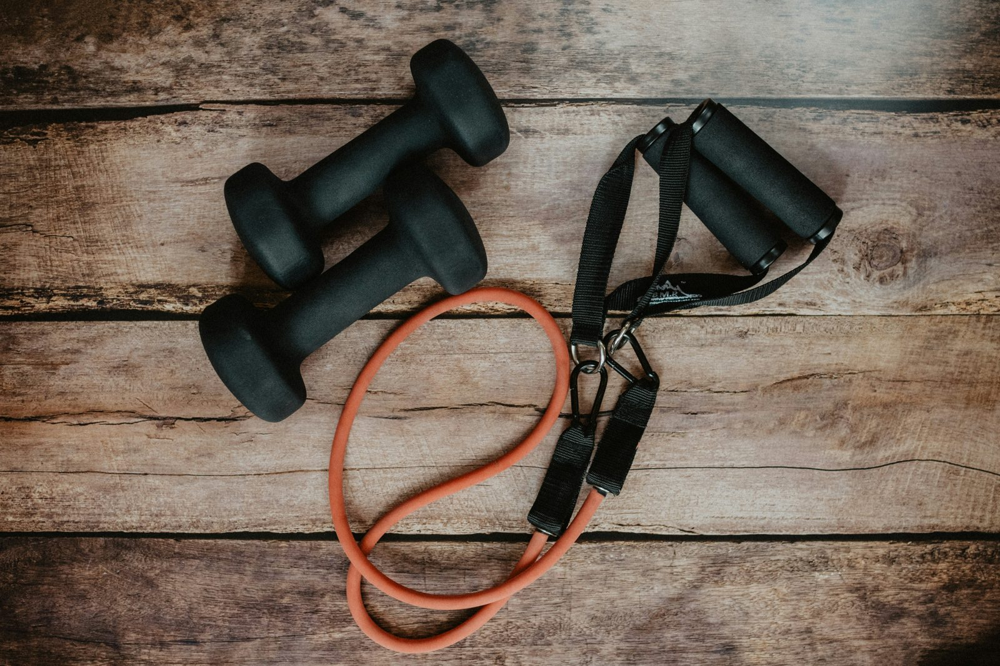

Зайдите в любой зал — и увидите два чётких лагеря: людей, перемещающихся между штангами и гантелями, и людей, проходящих круг тренажёров. Оба реально строят силу и мышцы — настоящий вопрос не в том, что «лучше» абстрактно, а в том, что подходит вашему текущему уровню опыта, целям и сколько времени вы хотите тратить на изучение техники против простой тренировки.
Что на самом деле различается между ними
Свободные веса (штанги, гантели, гири) требуют контролировать вес в пространстве во всех направлениях, задействуя мышцы-стабилизаторы на протяжении движения, чтобы удержать вес сбалансированным и на правильной траектории. Тренажёры направляют вес по фиксированной траектории, убирая большую часть этого требования к стабилизации и более напрямую изолируя целевую мышцу, так как сам тренажёр обеспечивает баланс и траекторию.
Рост мышц: более похоже, чем обычно предполагают
Исследования, сравнивающие свободные веса и тренажёры для роста мышц при одинаковом объёме и усилии тренировки, обычно находят схожие результаты гипертрофии между ними. Мышцы реагируют на механическое напряжение и достаточный объём тренировки независимо от того, приходит ли это напряжение от штанги или тренажёра — оборудование — механизм доставки тренировочного стимула, а не независимая переменная, кардинально меняющая результаты сама по себе.
Где у свободных весов реальное преимущество
Свободные веса требуют больше координации, баланса и активации мышц-стабилизаторов, что, вероятно, лучше переносится на реальные двигательные паттерны и спортивную результативность, чем фиксированная траектория тренажёра. Они также дают больше гибкости в двигательных паттернах и диапазоне движения, подстроенных под индивидуальные пропорции тела, а не фиксированную «для большинства» траекторию тренажёра, которая может не подойти одинаково хорошо всем углам суставов.
Где у тренажёров реальное преимущество
Тренажёры дают значительно более низкий порог входа — фиксированная траектория убирает большую часть кривой обучения технике и риска травм, сопровождающих стабилизацию свободного веса, особенно для полных новичков. Это делает тренажёры практичным, менее рискованным способом построить начальную силу и уверенность перед добавлением более технически требовательных упражнений со свободными весами. Тренажёры также позволяют безопаснее тренироваться до отказа, так как нет риска, что штанга упадёт на вас, как может быть при упражнении со свободным весом без страхующего.
Безопасность и риск травм
Тренажёры обычно считаются более безопасными для тренировок без наблюдения, особенно для новичков, именно потому, что фиксированная траектория ограничивает, как вес может двигаться, если техника нарушается. Свободные веса несут больший риск травм при плохой технике или чрезмерном весе до развития должной силы стабилизации, хотя этот риск управляем при правильной прогрессии и, в идеале, некотором коучинге на начальном этапе.
Практические рекомендации по тренировкам
Многие хорошо продуманные программы используют оба варианта, а не рассматривают это как исключительный выбор — тренажёры для определённых изолирующих движений или как более безопасный вариант при тренировке в одиночку без страхующего, свободные веса для базовых движений, где требование стабилизации и функциональный перенос действительно ценны. Полным новичкам часто полезно провести первые недели в основном на тренажёрах, строя силовую базу и осознание тела, затем постепенно вводя базовые движения со свободными весами по мере развития уверенности и базовой силы.
Что выбрать?
Если вы совсем новичок в силовых тренировках, начало с тренажёров для построения начальной силы и уверенности с меньшим риском травм — разумный, хорошо обоснованный подход. Если у вас уже есть некоторый тренировочный опыт или конкретные цели результативности сверх общего набора мышц, стоит приоритизировать включение свободных весов за их пользу стабилизации и функциональности. Для большинства людей, тренирующихся стабильно в долгосрочной перспективе, сочетание обоих — а не строгая приверженность одному лагерю — обычно даёт наиболее разносторонние результаты.
Частые вопросы
Менее ли эффективны тренажёры, чем свободные веса, для роста мышц?
Не обязательно — исследования в целом показывают схожий рост мышц между свободными весами и тренажёрами при одинаковом объёме и интенсивности тренировки, так как мышцы реагируют на напряжение независимо от создающего его оборудования.
Стоит ли полным новичкам начинать с тренажёров?
Многие тренеры рекомендуют тренажёры изначально для построения основы силы и уверенности с меньшим риском травм, прежде чем переходить к свободным весам по мере развития техники и осознания тела в последующие недели.
Правда ли, что свободные веса строят больше функциональной силы?
Свободные веса требуют больше активации мышц-стабилизаторов и координации, что, вероятно, лучше переносится на реальные движения и спортивную активность, чем фиксированные, направляемые траектории тренажёров.
Можно ли получить полноценную тренировку, используя только тренажёры?
Да — в большинстве коммерческих залов достаточно разнообразия тренажёров для эффективной тренировки всех основных групп мышц, хотя некоторые конкретные двигательные паттерны и функциональный перенос сложнее воспроизвести без свободных весов.